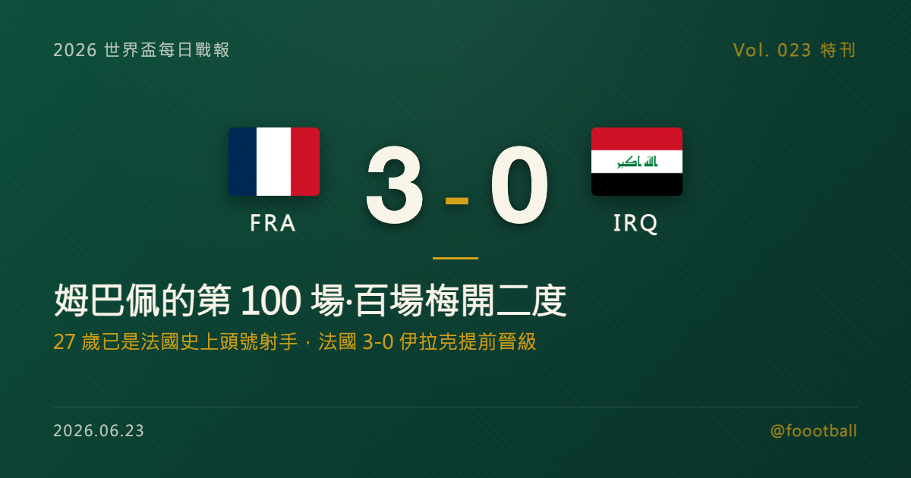

姆巴佩的第 100 場：百場梅開二度，27 歲已是法國史上頭號射手
2026 世界盃 I 組次輪，法國在費城 3-0 完勝伊拉克。姆巴佩在自己的第 100 場法國代表賽梅開二度（14'、54'），登貝萊錦上添花，法國兩戰全勝、提前晉級。27 歲的姆巴佩是法國史上最年輕的百場球員，本季已超越吉魯成為隊史頭號射手（60 球），世界盃生涯進球也追平克洛澤的 16 球、史上僅次於梅西。這篇特刊把百場之夜、史上射手地位與法國的奪冠成色，逐項講清楚。

2026 世界盃特刊｜Vol. 023 番外
有些球員用一整個生涯追逐一座里程碑；姆巴佩（Kylian Mbappé）卻在 27 歲，就把許多球員一整個生涯才碰得到的數字，一個個提前收進口袋。
2026 年 6 月，在美國費城的林肯金融球場，法國 3-0 完勝伊拉克。比分之外，這一夜真正的主角是法國隊長——這是姆巴佩代表國家隊出賽的第 100 場，而他用一記梅開二度，為這個里程碑寫下了最對味的注腳。對一支衛冕亞軍、志在重奪大力神盃的法國而言，這場大勝來得乾脆，也來得是時候。而對姆巴佩本人來說，在這樣一個值得銘記的夜晚，用最直接的方式——進球——來慶祝，再合適不過。
這一夜值得慢慢拆——先拆這場百場代表作，再拆姆巴佩「法國史上頭號射手」的份量，接著拆他追平克洛澤的世界盃 16 球，最後，聊聊這支法國的奪冠成色。
一、百場之夜：14 分鐘破門，54 分鐘再進一球
法國這場勝利的節奏，從開場就掌握在自己手裡。
第 14 分鐘，第一球——姆巴佩百場開張。 比賽才過十多分鐘，法國就用流暢的配合撕開伊拉克的防線：姆巴佩與奧利塞（Michael Olise）做出一記二過一，隨後在門前起腳、把皮球弧線送進網窩，1-0。即使伊拉克門將指尖一度碰到球，仍無法阻止這顆破門。對在百場里程碑出賽的姆巴佩而言，沒有比「親自開紀錄」更好的開場白。
第 54 分鐘，第二球——梅開二度，鎖定大局。 下半場一開始，姆巴佩再度展現他標誌性的速度與終結效率，攻入個人本場第二球，把比分拉開到 2-0。隨後登貝萊（Ousmane Dembélé）在第 66 分鐘錦上添花，法國 3-0 鎖定勝局。
值得一提的是，這場比賽的過程並不全然順遂——半場時因當地一度遭遇雷暴，中場休息延長逾兩個多小時才恢復比賽。對任何一支球隊而言，這樣的中斷都是考驗：球員的身體早已熱開、節奏卻被硬生生打斷，重新上場時要再次進入狀態並不容易。但漫長的等待沒有打亂法國的節奏，重新開球後他們依舊牢牢掌控局面，姆巴佩更在易邊後迅速進球——這份「不受外在干擾」的穩定，本身就是強隊的特質。一場百場、一記梅開二度、一場提前晉級的大勝，對姆巴佩與法國來說，都是再理想不過的劇本。
二、法國史上頭號射手：27 歲就改寫的紀錄
把鏡頭拉近到姆巴佩個人，會發現這場梅開二度的意義，遠不只是兩個進球。
百場、60 球——這是姆巴佩目前的法國國家隊數據。他在 100 場代表賽中攻入 60 球，是法國隊史上的頭號射手。事實上，就在本屆世界盃的首戰（6 月 16 日對塞內加爾），姆巴佩才剛以一記梅開二度、把個人國家隊進球推上 58 球，超越吉魯（Olivier Giroud）登上法國隊史射手王；如今對伊拉克再進兩球，這個數字已經來到 60。
更驚人的是「年齡」。姆巴佩達成百場代表賽時，年僅 27 歲又 184 天——他是法國史上最年輕的百場球員，也是歐洲史上第四年輕達成這項成就的男子球員。一般球員要踢滿一百場國家隊、再成為隊史頭號射手，往往是生涯後段、甚至接近退役才會發生的事；姆巴佩卻在仍處於當打之年、理論上還有大半個職業生涯在前方的此刻，就已經把這兩項紀錄一併收下。
這意味著什麼？意味著只要保持健康與狀態，姆巴佩接下來改寫的，將不再是「法國隊史」的紀錄，而是足球世界裡那些更高、更遠的標竿。
換個角度看，「最年輕的百場球員」這個身分，背後其實藏著兩件不容易的事：一是極早出道——他十幾歲就已經是法國隊的常客；二是持續健康與穩定——能在這麼年輕就累積到一百場，代表他這些年幾乎沒有因為傷病或狀態長期缺席。對一名以速度和爆發力為核心武器的前鋒而言，能維持這種出勤率，本身就很不簡單。這也讓人對他的「下半場生涯」充滿想像：當大多數球員在這個年紀才剛開始累積大賽履歷時，姆巴佩已經手握一座世界盃冠軍、一座金靴、一項隊史射手紀錄，以及一個仍在不斷延長的未來。
三、世界盃 16 球：追平克洛澤，史上僅次於梅西
如果把範圍放大到世界盃，姆巴佩的故事又多了一層歷史座標。
對伊拉克的梅開二度，讓姆巴佩的世界盃生涯進球從 14 球推進到 16 球：第 14 分鐘的第一球，讓他追上「外星人」羅納度（Ronaldo Nazário）的 15 球；第 54 分鐘的第二球，則讓他追平德國名宿克洛澤（Miroslav Klose）的 16 球，並列男足世界盃史上第二多，僅次於同一晚把紀錄推上 18 球的梅西。換句話說，在這個夜晚，世界盃射手榜的「過去、現在與未來」奇妙地同框了：梅西超越克洛澤、登上史上第一；而姆巴佩則追平克洛澤、站上史上第二的位置。
更值得玩味的是「效率」。姆巴佩的這 16 顆世界盃進球，只用了 16 場世界盃比賽、橫跨三屆賽事就達成，平均每場世界盃比賽都有進球——這在世界盃史上是極為罕見的輸出。
把這三屆拆開來看，幾乎就是一部姆巴佩的成長史。2018 年俄羅斯世界盃，他以未滿 20 歲之姿橫空出世，攻入 4 球、包括十六強對阿根廷的梅開二度，最終隨法國捧起大力神盃，一夜之間成為全世界討論的新星。2022 年卡達世界盃，他完成了從「天才少年」到「球隊核心」的蛻變——獨進 8 球、勇奪金靴，更在決賽對阿根廷上演帽子戲法，幾乎以一己之力把法國拖進點球大戰，儘管最終屈居亞軍，那場決賽的演出已被視為世界盃史上最偉大的個人表現之一。2026 年至今，他又添 4 球，並在這條曲線上繼續向前。從奪冠的少年、到亞軍的核心，再到此刻衛冕亞軍的隊長與射手王，姆巴佩的世界盃故事，每一屆都在加厚。
考慮到姆巴佩才 27 歲，若健康與狀態允許，仍有機會再戰至少一到兩屆世界盃。梅西的 18 球紀錄此刻看似遙遠，但放在姆巴佩的年齡與效率之前，這道牆，未必沒有被他繼續推高的一天。
這也讓這個夜晚有了一種微妙的象徵意味。同一個晚上，38 歲的梅西把紀錄推上 18、為一個時代寫下高度；而 27 歲的姆巴佩追平克洛澤、站上史上第二，像是站在這個時代的門口、等著接過棒子。世界盃射手榜的最高處，往往是一場跨越世代的接力——克洛澤之後是梅西，而梅西之後最有機會續寫這份名單的人，此刻就在費城的草皮上，剛剛完成他的第 100 場。
四、衛冕亞軍的奪冠成色：速度、效率與一個正值巔峰的核心
把視野拉得更遠，這支法國想要的，顯然不只是「小組出線」。
作為 2022 年世界盃的亞軍，法國帶著「只差一步」的遺憾與野心來到美加墨。它的戰力底色，是歐洲頂級的個人天賦加上成熟的整體架構——而姆巴佩，正是這套體系最鋒利的那把刀。他的速度、突破與終結，能在任何防線前製造殺機；當一支球隊的當家球星正處於生涯巔峰、又能在大賽穩定進球時，這支球隊的天花板自然被打得很高。
兩輪戰罷，法國兩戰全勝、以 6 分提前晉級，延續了近年大賽穩定闖進淘汰賽的走勢。
不過，真正讓這支法國值得期待的，是「天賦的厚度」。姆巴佩之外，登貝萊、奧利塞等人都具備在頂級舞台改變比賽的能力——當對手把防守重心壓向姆巴佩時，這些人就能成為破局的第二、第三選項。對伊拉克一役，正是姆巴佩破門、登貝萊接力的縮影。這種「不必只靠一個人」的進攻層次，往往是大賽走得遠的球隊共通的底氣。
當然，從一場對伊拉克的完勝，到真正叩開冠軍大門，中間還隔著漫長而險峻的淘汰賽——大賽冠軍從來不是靠小組賽的比分堆出來的，2022 年的那場決賽失利也仍是這支球隊心中的一根刺。但至少從目前看來，法國的引擎運轉順暢，而那個最關鍵的零件，狀態正佳。
五、接下來：末輪對挪威的頭名戰
對法國來說，末輪對挪威的這一戰，份量不輕。
挪威同樣兩戰全勝、提前晉級，由另一位頂級射手哈蘭德（Erling Haaland）領銜。這場 I 組的「頭名對決」，不只決定誰是小組第一，更牽動淘汰賽的對位——在 48 隊、賽程更長的本屆世界盃，淘汰賽的籤表由小組名次決定，以頭名出線，往往能在淘汰賽初期避開另一組的強敵，替後續的征途鋪一條相對平緩的路。對已經提前晉級的法國而言，這場球少了「生死」的壓力，卻多了「卡位」的戰略意義。
對球迷而言，姆巴佩與哈蘭德兩位當代最具代表性的前鋒正面交鋒，本身就是末輪最大的看點之一——一邊是手握世界盃冠軍與金靴、正值巔峰的衛冕亞軍隊長，一邊是首征世界盃、來勢洶洶的新生代王牌。兩種不同的故事線在同一場比賽碰撞，無論結果如何，都注定好看。
從百場里程碑的梅開二度，到末輪對挪威的頭名戰，姆巴佩與法國的世界盃才剛剛進入正題。對一支志在重奪冠軍的球隊而言，小組賽踢得再漂亮，也只是把基礎打穩；真正的考驗，要等到淘汰賽單場定生死的舞台才會到來。而這場第 100 場的代表作，或許正是一段更長故事的序章。
常見問題
Q：姆巴佩這場為什麼特別？ A：這是姆巴佩代表法國出賽的第 100 場。他在這個里程碑之夜梅開二度（第 14、54 分鐘），加上登貝萊的進球，法國 3-0 完勝伊拉克並提前晉級。27 歲又 184 天的他，是法國史上最年輕的百場球員。
Q：姆巴佩是法國史上進球最多的球員嗎？ A：是的。他在 100 場代表賽中攻入 60 球，是法國隊史頭號射手。他在本屆世界盃首戰（對塞內加爾）梅開二度時，就以 58 球超越吉魯登頂，對伊拉克再進兩球後來到 60 球。
Q：姆巴佩世界盃進了幾球？排名如何？ A：16 球，追平德國名宿克洛澤，並列男足世界盃史上第二多，僅次於同晚將紀錄推上 18 球的梅西。這 16 球來自 2018（4 球）、2022（8 球，當屆金靴）與 2026（至今 4 球）三屆世界盃。
Tags: 世界盃, 2026世界盃, 姆巴佩, 法國, 百場, 世界盃射手